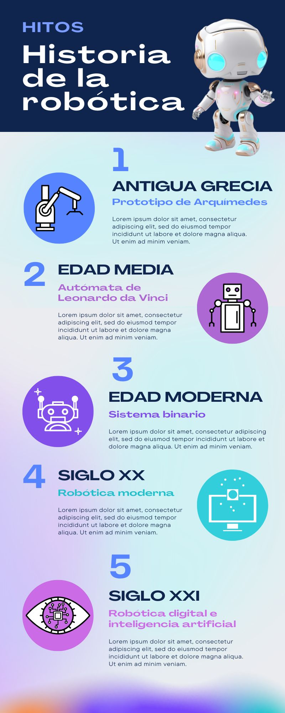

2
Instrucciones:
- Observa detenidamente la infografía que se presenta a continuación.
- Presiona los marcadores para saber cómo se compone.
- Pulsa sobre el icono rojo (Mostrar Cuestionario) que se encuentra en la parte superior derecha para responder a las interrogantes que se han planteado.
- Para responder las preguntas, selecciona la opción que creas correcta y presiona el icono de visto.
Nota: Para responder las preguntas tener en consideración las características que deben poseer los contenidos digitales.
{"typeGame":"Mapa","instructions":"","showMinimize":false,"showActiveAreas":false,"author":"","url":"resources/te.jpg","authorImage":"","altImage":"","itinerary":{"showClue":false,"clueGame":"","percentageClue":40,"showCodeAccess":false,"codeAccess":"","messageCodeAccess":""},"points":[{"id":"p595692879885","title":"Imagenes de la infografía","type":4,"url":"","video":"","x":0.8252427184466019,"y":0.07766990291262135,"x1":0.8252427184466019,"y1":0.07766990291262135,"footer":"","author":"","alt":"","iVideo":0,"fVideo":0,"eText":"","iconType":7,"question":"hhhhhh","question_audio":"","toolTip":"","link":"","color":"#000000","fontSize":"14","map":{"id":"a595692879885","pts":[{"id":"p434137732155","title":"","type":0,"url":"","video":"","x":0,"y":0,"x1":0,"y1":0,"footer":"","author":"","alt":"","iVideo":0,"fVideo":0,"eText":"","iconType":0,"question":"","question_audio":"","toolTip":"","link":"","color":"#000000","fontSize":"14","map":{"id":"a434137732155","url":"","alt":"","author":"","pts":[]},"slides":[{"id":"s434137732155","title":"","url":"","author":"","alt":"","footer":""}],"activeSlide":0}],"url":"","alt":"","author":"","active":0},"slides":[{"id":"s595692879885","title":"","url":"","author":"","alt":"","footer":""}],"activeSlide":0,"audio":""},{"id":"p1224032251659","title":"Texto de la infografía","type":4,"url":"","video":"","x":0.2912621359223301,"y":0.43938106796116505,"x1":0,"y1":0,"footer":"","author":"","alt":"","iVideo":0,"fVideo":0,"eText":"","iconType":7,"question":"","question_audio":"","toolTip":"","link":"","color":"#000000","fontSize":"14","map":{"id":"a1224032251659","pts":[{"id":"p1187180199641","title":"","type":0,"url":"","video":"","x":0,"y":0,"x1":0,"y1":0,"footer":"","author":"","alt":"","iVideo":0,"fVideo":0,"eText":"","iconType":0,"question":"","question_audio":"","toolTip":"","link":"","color":"#000000","fontSize":"14","map":{"id":"a1187180199641","url":"","alt":"","author":"","pts":[]},"slides":[{"id":"s1187180199641","title":"","url":"","author":"","alt":"","footer":""}],"activeSlide":0}],"url":"","alt":"","author":"","active":0},"slides":[{"id":"s1224032251659","title":"","url":"","author":"","alt":"","footer":""}],"activeSlide":0,"audio":""},{"id":"p753978907239","title":"Colores de la infografía","type":4,"url":"","video":"","x":0.05825242718446602,"y":0.22190533980582525,"x1":0,"y1":0,"footer":"","author":"","alt":"","iVideo":0,"fVideo":0,"eText":"","iconType":7,"question":"","question_audio":"","toolTip":"","link":"","color":"#000000","fontSize":"14","map":{"id":"a753978907239","pts":[{"id":"p5850145187","title":"","type":0,"url":"","video":"","x":0,"y":0,"x1":0,"y1":0,"footer":"","author":"","alt":"","iVideo":0,"fVideo":0,"eText":"","iconType":0,"question":"","question_audio":"","toolTip":"","link":"","color":"#000000","fontSize":"14","map":{"id":"a5850145187","url":"","alt":"","author":"","pts":[]},"slides":[{"id":"s5850145187","title":"","url":"","author":"","alt":"","footer":""}],"activeSlide":0}],"url":"","alt":"","author":"","active":0},"slides":[{"id":"s753978907239","title":"","url":"","author":"","alt":"","footer":""}],"activeSlide":0,"audio":""}],"isScorm":0,"textButtonScorm":"Guardar la puntuación","repeatActivity":false,"textAfter":"","evaluation":4,"selectsGame":[{"type":0,"time":null,"numberOptions":2,"typeSelect":0,"customScore":null,"msgHit":"","msgError":"","quextion":"¿Cómo contribuyen las imágenes utilizadas a hacer la infografía más atractiva y fácil de entender?","options":["Facilitan la comprensión del tema.","No tienen relevancia en el desarrollo de contenidos digitales..","",""],"solution":"A","percentageShow":35,"solutionQuestion":""},{"type":0,"time":null,"numberOptions":2,"typeSelect":0,"customScore":null,"msgHit":"","msgError":"","quextion":"¿De qué manera la distribución equilibrada de texto e imágenes mejora la experiencia del usuario?","options":["Hace que sea difícil de seguir.","La distribución equilibrada permite que el lector no se sienta abrumado por demasiado texto o imágenes.","",""],"solution":"B","percentageShow":35,"solutionQuestion":""},{"type":0,"time":null,"numberOptions":2,"typeSelect":0,"customScore":null,"msgHit":"","msgError":"","quextion":"¿Por qué los colores utilizados son adecuados para facilitar la lectura y comprensión?","options":["Los colores ayudan a destacar la información importante sin distraer al lector.","Los colores distraen del contenido principal, dificultando la lectura.","",""],"solution":"A","percentageShow":35,"solutionQuestion":""},{"type":0,"time":null,"numberOptions":2,"typeSelect":0,"customScore":null,"msgHit":"","msgError":"","quextion":"¿Cuál es el propósito de presentar la información de manera clara y fácil de entender?","options":["Para permite que el lector comprenda rápidamente el mensaje principal sin esfuerzo adicional.","Para que sea menos fácil de entender y distraer la atención del lector.","",""],"solution":"A","percentageShow":35,"solutionQuestion":""},{"type":0,"time":null,"numberOptions":2,"typeSelect":0,"customScore":null,"msgHit":"","msgError":"","quextion":"¿Por qué es importante evitar el exceso de texto en una infografía?","options":["Para asegurar que la infografía sea escaneable y fácil de entender rápidamente.","Para que la infografía sea abrumadora y difícil de seguir.","",""],"solution":"A","percentageShow":35,"solutionQuestion":""}],"isNavigable":true,"showSolution":true,"timeShowSolution":8,"version":2,"percentajeIdentify":100,"percentajeShowQ":100,"percentajeQuestions":100,"autoShow":false,"autoAudio":true,"optionsNumber":2,"evaluationF":true,"evaluationIDF":"ACMCD","id":"20247172196300","order":"","msgs":{"msgSubmit":"Enviar","msgIndicateWord":"Proporcione una palabra o expresión","msgClue":"¡Genial! La pista es:","msgErrors":"Errores","msgHits":"Aciertos","msgScore":"Puntuación","msgMinimize":"Minimizar","msgMaximize":"Maximizar","msgFullScreen":"Pantalla Completa","msgNoImage":"Pregunta sin imágenes","msgSuccesses":"¡Correcto! | ¡Excelente! | ¡Genial! | ¡Muy bien! | ¡Perfecto!","msgFailures":"¡No era eso! | ¡Incorrecto! | ¡No es correcto! | ¡Lo sentimos! | ¡Error!","msgTryAgain":"Necesita al menos un %s% de respuestas correctas para conseguir la información. Vuelva a intentarlo.","msgEndGameScore":"Antes de guardar la puntuación comience la partida.","msgScoreScorm":"La puntuación no se puede guardar porque esta página no forma parte de un paquete SCORM.","msgPoint":"Punto","msgAnswer":"Responder","msgOnlySaveScore":"¡Sólo puede guardar la puntuación una vez!","msgOnlySave":"Sólo puede guardar una vez","msgInformation":"Información","msgYouScore":"Su puntuación","msgOnlySaveAuto":"Su puntuación se guardará después de cada pregunta. Sólo puede jugar una vez.","msgSaveAuto":"Su puntuación se guardará automáticamente después de cada pregunta.","msgSeveralScore":"Puede guardar la puntuación tantas veces como quiera","msgYouLastScore":"La última puntuación guardada es","msgActityComply":"Ya ha realizado esta actividad.","msgPlaySeveralTimes":"Puede realizar esta actividad cuantas veces quiera","msgClose":"Cerrar","msgPoints":"puntos","msgPointsA":"Puntos","msgQuestions":"Preguntas","msgAudio":"Audio","msgAccept":"Aceptar","msgYes":"Sí","msgNo":"No","msgShowAreas":"Mostrar áreas activas","msgShowTest":"Mostrar cuestionario","msgGoActivity":"Pulsa aquí para realizar esta actividad","msgSelectAnswers":"Selecciona las opciones correctas y pulsa sobre el botón 'Responder'.","msgCheksOptions":"Marca todas las opciones en el orden adecuado y pulsa sobre el botón 'Responder'.","msgWriteAnswer":"Escribe la palabra o expresión correcta y pulsa en el botón 'Responder'.","msgIdentify":"Identifica","msgSearch":"Buscar","msgClickOn":"Pulsa sobre","msgReviewContents":"Debes repasar el %s% de los contenidos de la actividad antes de completar el cuestionario.","msgScore10":"¡Todo perfecto! ¡Enhorabuena! ¿Deseas repetir esta actividad?","msgScore4":"No has superado esta prueba. Repasa sus contenidos e inténtalo de nuevo. ¿Deseas repetir la actividad?","msgScore6":"¡Estupendo! Has superado la prueba, pero seguro que lo puedes mejorar. ¿Deseas repetir esta actividad?","msgScore8":"¡Casi perfecto! Aún lo puedes hacer mejor. ¿Deseas repetir esta actividad?","msgNotCorrect":"¡No es correcto! Has pulsado sobre","msgNotCorrect1":"¡No es correcto! Has pulsado sobre","msgNotCorrect2":"y la respuesta correcta es","msgNotCorrect3":"¡Prueba otra vez!","msgAllVisited":"¡Genial! Has visitado los puntos necesarios.","msgCompleteTest":"Puedes completar el cuestionario.","msgPlayStart":"Pulse aquí para empezar","msgSubtitles":"Subtítulos","msgSelectSubtitles":"Selecciona un archivo de subtítulos. Formatos válidos:","msgNumQuestions":"Número de preguntas","msgHome":"Inicio","msgReturn":"Volver","msgCheck":"Comprobar","msgUncompletedActivity":"Actividad no completada","msgSuccessfulActivity":"Actividad superada. Puntuación: %s","msgUnsuccessfulActivity":"Actividad no superada. Puntuación: %s","msgTypeGame":"Mapa"}}

Su navegador no es compatible con esta herramienta.